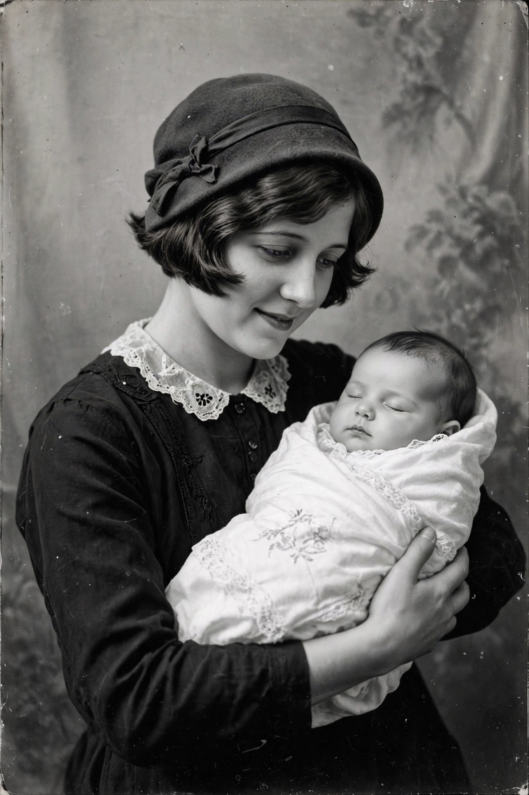

Buck v. Bell

Buck v. Bell
| Full case name | Carrie Buck v. John Hendren Bell, Superintendent of State Colony for Epileptics and Feeble Minded |
|---|---|
| Decided | May 2, 1927 |
| Citation | 274 U.S. 200 |
| Court | Supreme Court of the United States |
| Majority | Holmes, joined by all but Butler |
| Holding | Virginia's compulsory sterilisation statute did not violate the Fourteenth Amendment |
Buck v. Bell, 274 U.S. 200 (1927), is a decision of the Supreme Court of the United States in which the Court upheld a Virginia statute authorising the compulsory sterilisation of the "unfit", including people with intellectual disabilities, "for the protection and health of the state". The decision, written by Justice Oliver Wendell Holmes Jr. in an 8–1 ruling, legitimised eugenic sterilisation laws across the United States and is remembered for Holmes's phrase: "Three generations of imbeciles are enough."
Background
Carrie Buck was a young woman committed to the Virginia State Colony for Epileptics and Feeble-Minded after becoming pregnant, reportedly as a result of being raped by a nephew of her foster parents. Diagnosed — on flimsy evidence — as "feebleminded" and promiscuous, she was selected as the test case for Virginia's 1924 Eugenical Sterilization Act. Her mother Emma was also a Colony resident, and colony officials claimed Carrie's infant daughter Vivian was likewise feebleminded, supplying the "three generations" of Holmes's opinion. The case was deliberately arranged by the law's supporters; Carrie's court-appointed lawyer was a former colony board member who mounted only a token defence.
Decision
Holmes's brief majority opinion analogised compulsory sterilisation to compulsory vaccination (upheld in Jacobson v. Massachusetts) and to military conscription, arguing that "the public welfare may call upon the best citizens for their lives. It would be strange if it could not call upon those who already sap the strength of the State for these lesser sacrifices." The Court found no violation of due process or equal protection. Justice Pierce Butler dissented without opinion.
Aftermath and legacy
Carrie Buck was sterilised in October 1927. Later research showed that she was of ordinary intelligence, that she had been institutionalised to conceal her rape, and that her daughter Vivian — who died of measles at age eight — had performed normally in school. The ruling was cited approvingly by defence lawyers at the Nuremberg trials on behalf of Nazi eugenics officials. Tens of thousands of Americans were sterilised under state laws validated by the decision. In Skinner v. Oklahoma (1942) the Court struck down an Oklahoma sterilisation law and treated reproduction as a fundamental right, undermining Buck's reasoning, but Buck v. Bell was never expressly overruled. Virginia repealed its sterilisation law in 1974 and apologised for its eugenics programme in 2002, on the decision's 75th anniversary; a historical marker honours Carrie Buck in Charlottesville.
See also: Scientific racism · Eugenics · Oliver Wendell Holmes Jr. · Compulsory sterilization